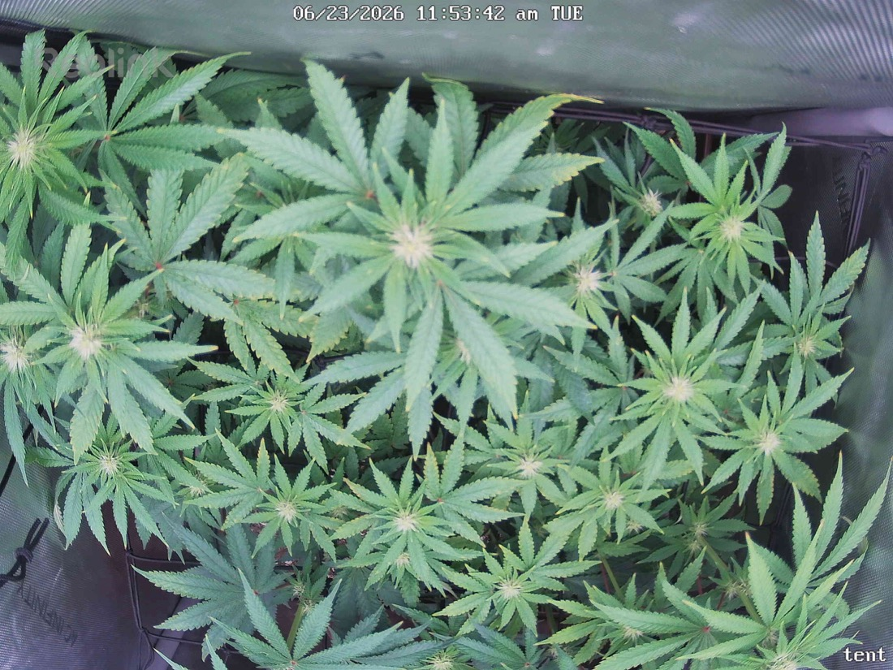

← All reports
Jun 23, 2026
Tue Jun 23, 2026 — 11:53 AM

Prognosis
Two snapshots ~5 hours apart same day — same-day comparison, so this is a testing/spot-check, not a growth interval.
- What changed: Essentially nothing structurally — same canopy, same colas, same posture. Differences are camera angle/zoom (current is shifted/wider) and light: 11:53 frame is brighter/whiter (lights fully on, possibly closer crop), 07:05 is the early-on softer light. No real growth expected in 5 hrs.
- Canopy: Full, even, flat-trained plate of tops filling the 2×2 — exactly what the scrog work since 6/13 was aiming for. Lots of distinct cola sites coming up through the net.
- Color: Healthy medium-to-deep green across the board. No interveinal yellowing, no edge burn, no magnesium/cal-mag patterning. The red petioles you flagged on 6/22 are visible and consistent with genetics, not deficiency.
- Light stress: No tacoing or bleaching on the tops in either frame. A few leaf tips show the minor tip burn you already identified on 6/22 (light-stress, ~800 PPFD at canopy) — unchanged, not spreading. Holding at current height looks right.
- Pests: No webbing, stippling, or visible mites in either image. Consistent with your clean inspections since ~6/11 and the green-cleaner rounds. Stay the course on monitoring.
- Water/posture: Leaves are turgid and praying, no droop/claw. Last watered/fed 6/20 top dress — soil regime looks fine; next water on your ~4-day cadence is due about now.
- Phase check: ~3 weeks into 12/12 (flipped 6/3). Canopy structure and early bud-site formation are right on schedule for early flower stretch finishing up / bud-set beginning. Good place to be.
Next actions: No action needed from this pair — it's a same-day test shot. Keep light at current height (watch that hottest cola stays ≤~800), continue mite scouting, and water on schedule.
Overall: Healthy, well-trained early-flower canopy with only cosmetic light-tip burn — prognosis strong, no intervention required.